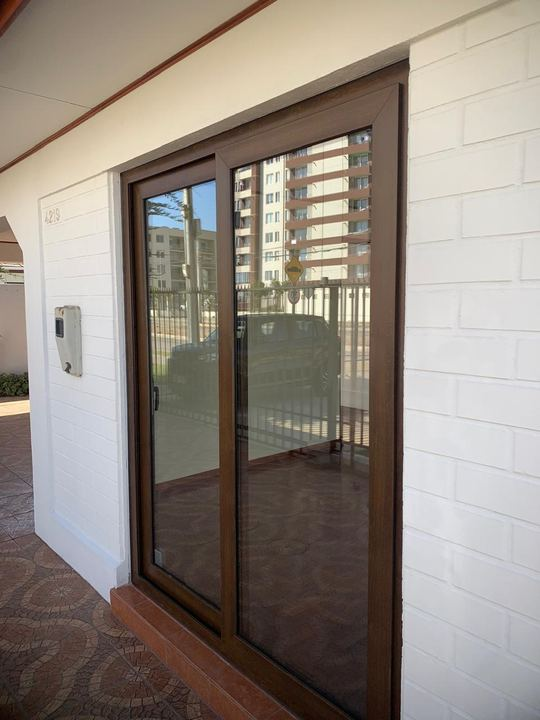
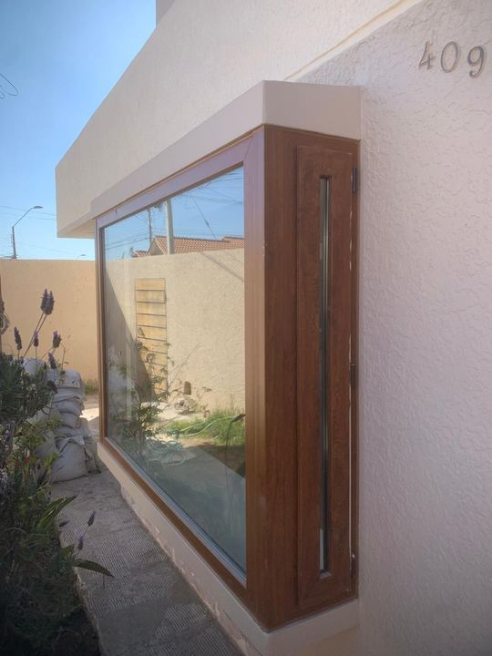
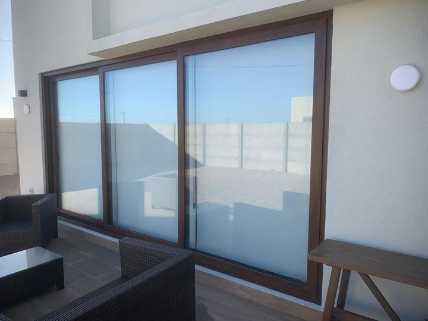
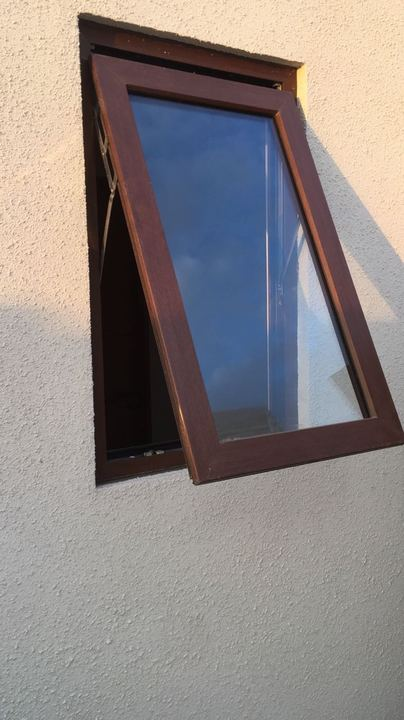
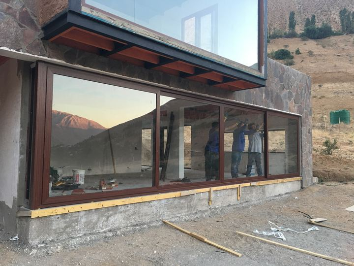
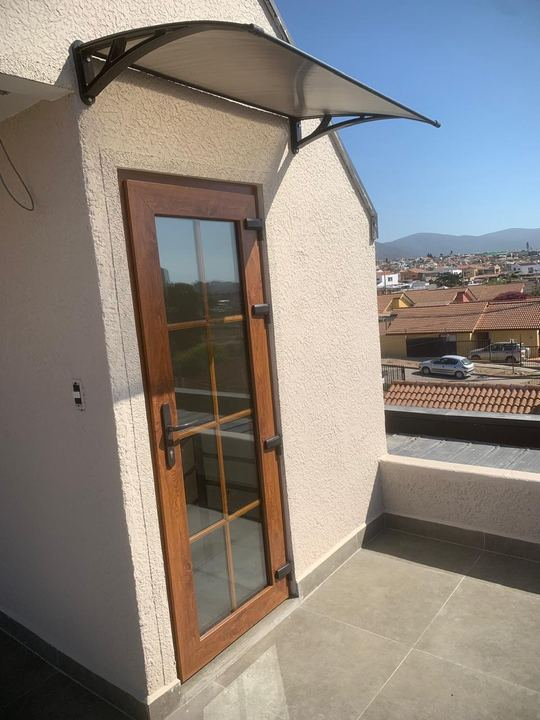
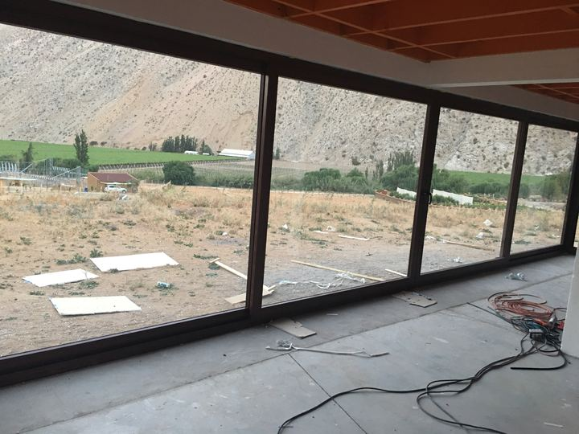
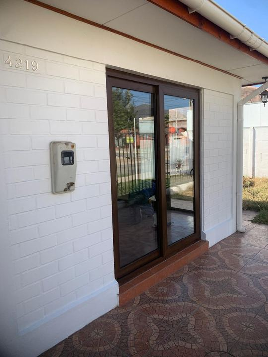

Aislamiento térmico
El PVC conduce muy poco el calor y sus perfiles tienen varias cámaras de aire interiores. Junto al termopanel, la casa pierde menos calor en invierno y se calienta menos en verano.
Fabricamos e instalamos ventanas, puertas, bow windows y paños fijos de PVC con termopanel, hechos a la medida de cada vano. Más abrigo en invierno, menos ruido de la calle y prácticamente sin mantención.
El PVC conduce muy poco el calor y sus perfiles tienen varias cámaras de aire interiores. Junto al termopanel, la casa pierde menos calor en invierno y se calienta menos en verano.
El cierre con burletes en todo el contorno y el doble vidriado reducen notablemente el ruido del tránsito, los vecinos o el viento.
Las hojas cierran contra juntas de goma que frenan el paso del aire, el polvo y la lluvia. Se acaban los chiflones y la tierra en los rieles.
El PVC no se oxida ni se corroe, por eso es una muy buena opción para viviendas cerca del mar, como en La Serena y Coquimbo.
No se pinta, no se barniza y no se pudre. Basta con limpiarlas de vez en cuando con agua y jabón neutro.
Al perder menos calor por las ventanas, la casa necesita menos calefacción para mantenerse temperada, lo que se nota en la cuenta a fin de mes.
Trabajamos con perfiles de PVC de Veka, DVP (líneas Aspen y Boston), Veratec y Deceuninck. Cada línea tiene distintas medidas, cantidad de cámaras y tipos de apertura, así que te recomendamos la que mejor calza con tu proyecto y tu presupuesto.


Las hojas se deslizan sobre rieles. No ocupan espacio al abrir, ideales para ventanales, livings y terrazas.
La hoja gira sobre un costado, como una puerta. Abre por completo el vano y logra el cierre más hermético.
La hoja se proyecta hacia afuera desde la parte inferior. Ventila sin dejar entrar la lluvia, muy usada en baños y cocinas.
Con la misma manilla se abre como abatible o se inclina arriba para ventilar de forma segura.
No se abre: deja pasar toda la luz con el máximo aislamiento. Se combina con hojas móviles.
Ventanas en ángulo que sobresalen de la fachada, puertas de PVC y cierres de terraza a medida.
Nuestras ventanas de PVC llevan doble vidriado hermético: dos vidrios separados por una cámara de aire sellada. Esa cámara es la que aísla del frío, del calor y del ruido, y ayuda a reducir la condensación en los vidrios.
Según el proyecto podemos incorporar:
El blanco es el color más habitual y combina con cualquier fachada. Dependiendo de la línea de perfil, también hay opciones con foliado imitación madera y otros colores.
Consúltanos qué colores están disponibles para la línea que elijas.
Vemos tu proyecto, tomamos las medidas de cada vano y te recomendamos el sistema adecuado.
Te enviamos un presupuesto detallado por ventana, con perfil, apertura y tipo de vidrio.
Cortamos, soldamos y armamos cada ventana en nuestro taller, a la medida exacta.
Nuestro equipo instala, sella y regula cada hoja para que cierre perfecto.






Depende de lo que busques. El PVC aísla mejor del frío y del ruido y no se corroe con la brisa marina. El aluminio permite perfiles más delgados y ventanales de gran tamaño. Fabricamos ambos, así que te ayudamos a elegir según tu proyecto.
Sí. Es uno de sus puntos fuertes: el PVC no se oxida con la salinidad, a diferencia de otros materiales.
Los perfiles de calidad para ventanas se formulan para resistir la radiación UV y mantener su color con los años, por eso trabajamos con marcas reconocidas.
Es un doble vidriado hermético (DVH): dos vidrios unidos por un separador perimetral, con una cámara de aire seca y sellada entre ellos. Es lo que da la aislación térmica y acústica.
La reducen bastante, porque el vidrio interior queda más tibio. Aun así, en ambientes muy húmedos es importante ventilar a diario.
Sí, hacemos recambio de ventanas en casas, departamentos e instituciones. Medimos el vano existente y fabricamos a la medida.
Depende de la cantidad de ventanas, el perfil y el tipo de vidrio. Te indicamos el plazo en la cotización.
Estamos en Coquimbo y trabajamos en la Región de Coquimbo, con obras en La Serena, Coquimbo, Ovalle y el Valle de Elqui, entre otras.
Cuéntanos las medidas aproximadas y el tipo de ventana que necesitas, y te preparamos una cotización.